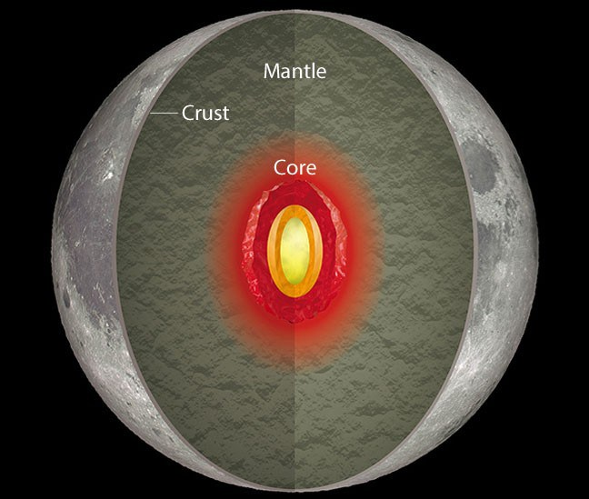

These occur because of the temperature differences between day and night time on the moon which about 400 degrees fahrenheit.
When the sunlight returns after the two-week lunar night then the frigid lunar crust expands and at the consequences, quake has happened. This quake is termed as thermal moonquakes. It is mainly occurred because of occurring the temperature differences between the night and day of the lunar surface.